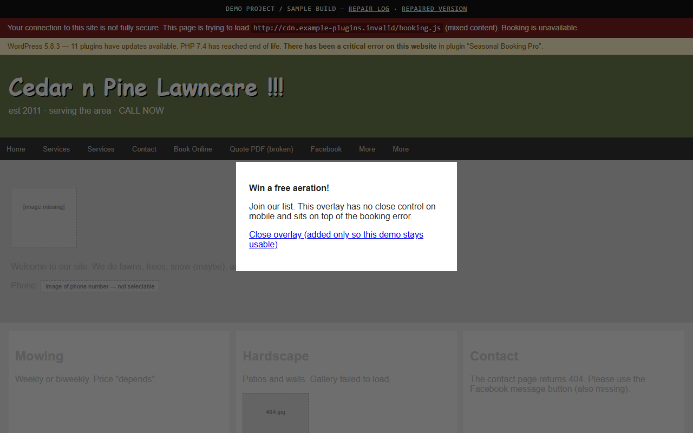

Website
Website rescue
A neglected small-business site made readable, usable on a phone, and easy to contact.
What it is
A sample rebuild of a landscaping website (Cedar & Pine — fictional).


Website
A neglected small-business site made readable, usable on a phone, and easy to contact.
A sample rebuild of a landscaping website (Cedar & Pine — fictional).
